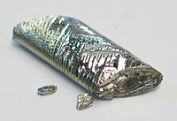

Numero atomico: 52
Massa atomica: 127,6
Temperatura di fusione (°C): 450
Temperatura di ebollizione (°C): 988
Energia di prima ionizzazione (kj/mol): 869
Elettronegatività (secondo Pauling): 2,10
Densità: 6,24
Numeri di ossidazione: -2+4+6
Configurazione elettronica: 1s2, 2s2, 2p6, 3s2, 3p6, 3d10, 4s2, 4p6, 4d10, 5s2 5p4
Maggiori Informazioni